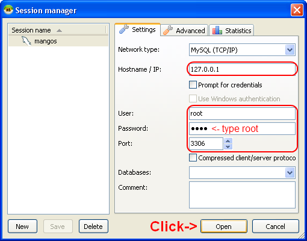
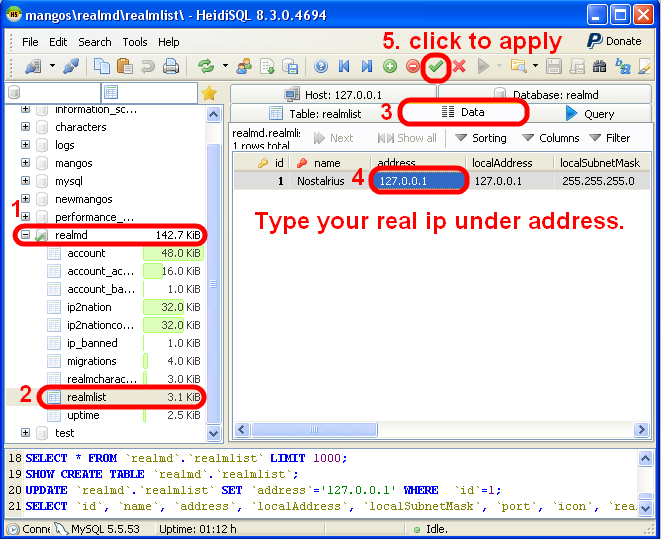

How to change your Realm's IP with HeidiSQL
You need to do this if you want to connect from another computer. Make sure MySQL is running first!
First connect to the database.
Connect with name and password root, IP 127.0.0.1, port 3306.

Then change the IP in the `realmlist` table.
Click on realmd, then realmlist, select Data tab, change address column.
